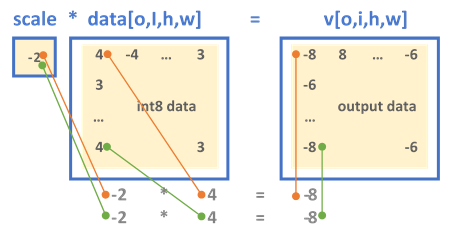
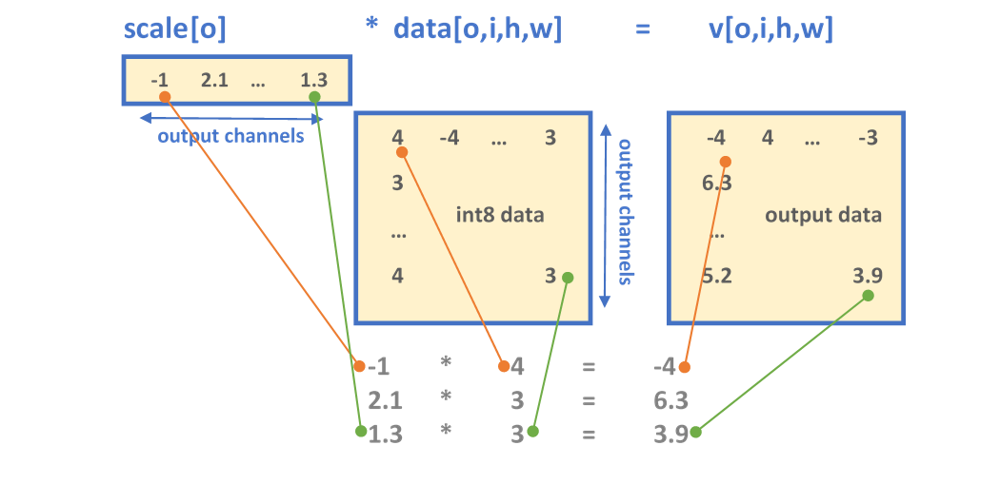

Int8 Inference
Introduction
To push higher performance during inference computations, recent work has focused on computing at a lower precision (that is, shrinking the size of data for activations and weights) to achieve higher throughput. Eight-bit computations (referred to as int8) offer improved performance over higher-precision types because they enable packing more data into a single instruction, at the cost of reduced (but acceptable) accuracy.
Int8 Workflow
There are different ways to use lower precision to perform inference. The Primitive Attributes: Quantization page describes what kind of quantization model oneDNN supports.
Quantization Process
To operate with int8 data types from a higher-precision format (for example, 32-bit floating point), data must first be quantized. The quantization process converts a given input into a lower-precision format. The precision and accuracy factors are determined by the scaling factors.
Range of the Data
The data range is usually obtained by sampling the dataset of previous executions in the original data type (for example, the activations and weights from training in f32):
\(R = \max(abs(T))\).
Here \(T\) is a tensor corresponding to either the weights or the activations. Establishing the range of values used in the computation, and selecting a proper scaling factor, prevents over- or underflows during computation of the lower-precision results.
Scaling Factor
The quantization factor is used to convert the original values into the corresponding int8 range and is calculated as:
\(Q_{\alpha} = \frac{255}{R_{\alpha}}\) is the quantization factor for activations with non-negative values.
\(Q_{w} = \frac{127}{R_{w}}\) is the quantization factor for weights.
The quantized activation, weights, and bias values are calculated as:
\(\alpha_{u8} = \lceil Q_{\alpha} \alpha_{f32} \rceil \in [0,255]\),
\(W_{s8} = \lceil Q_{w} W_{f32} \rceil \in [-127,127]\),
\(b_{s32} = \lceil Q_{\alpha} Q_{w} b_{f32} \rceil \in [-2^{31},2^{31}-1]\).
Here \(\lceil \rceil\) denotes rounding according to the active rounding mode (typically determined by the MXCSR register; the default value is RoundNearestEven).
When the destination value is stored as a signed 32-bit integer, the result is bound to the same quantization scaling factors :
\(X_{s32} = W_{s8} \cdot \alpha{u8} + b_{s32} \approx Q_{\alpha} Q_{\omega} X_{f32}\),
where \(X_{f32} = W_{f32} \cdot \alpha_{f32} + b_{f32}\).
Here the approximation is used to denote rounding.
The dequantized value is calculated as
\(X_{f32} \approx \frac{1}{Q_{\alpha} Q_{\omega}} X_{s32}\).
Quantization Example
To show how the quantization parameters are obtained, suppose we first start with a set of high-precision input and output values. These values come from sampling a previously executed training run and are stored as 32-bit floating point values:
activations: \(T_{\alpha} = [15, 14, 15, \ldots, 8, 11 ]\) where \(\max(abs(T_{\alpha})) = 15\)
weights: \(T_{\omega} = [-5.1 , 6.8, \ldots, -1.2, 9.8 ]\) where \(\max(abs(T_{\omega})) = 9.8\)
bias: \(T_{\alpha} = [ 2.4, -5.2, \ldots, -8 ]\) where \(\max(abs(T_{\alpha})) = 8\)
The scaling factors are:
\(Q_{\alpha} = \frac{255}{R_{\alpha}} = \frac{255}{15} = 17\)
\(Q_{w} = \frac{127}{R_{w}} = \frac{127}{9.8} = 12.96\)
Finally, the quantized input values for the int8 operation are calculated as:
\(\alpha_{u8} = \lceil Q_{\alpha} \alpha_{f32} \rceil\) \(= \Bigl \lceil 17 \cdot [15, 14, \ldots, 11 ] \Bigr \rceil = [255, 238, \ldots, 187]\)
\(W_{s8} = \lceil Q_{w} W_{f32} \rceil = \Bigl \lceil 12.96 \cdot [-5.1 , 6.8, \ldots, -1.2, 9.8 ] \Bigr \rceil = [-66, 88, \ldots, -15, 127]\)
\(b_{s32} = \lceil Q_{\alpha} Q_{w} b_{f32} \rceil = \Bigl \lceil 17 \cdot 12.96 \cdot [ 2.4, -5.2 \ldots, -8 ] \Bigr \rceil = [528, -1145, \ldots, -1762]\)
These arrays are the new inputs for the int8 net.
int8 Support
oneDNN supports int8 computations for inference by allowing one to specify that primitives input and output memory objects use int8 data types. int8 primitive implementations are optimized for high performance on the compatible hardware (see Data Types).
Attributes
Scaling factors and zero-points can be configured using primitive attributes. It is also possible to specify fused post-ops. All primitives support the attributes, but not all combinations of parameters are supported. In the case of an unsupported combination, the library returns an error.
In oneDNN, the scaling factor are applied to each memory object of a primitive. Moreover, to perform input transformations (for example, source, bias, and weights), oneDNN performs quantizing and dequantizing of data for int8 using the reorder primitive.
oneDNN has two formats for defining the quantization parameters. Depending on the configuration set by the scaling and zero-point masks, either the memory object is either scaled/shifted uniformly across all the dimensions (mask = 0) or a set of scaling values is applied to specific dimensions, as explained below:
A single floating point value shared across the tensor
An array of floating point values each corresponding to a specific dimension or set of dimensions
The mask parameter determines the dimension to which the scale or zero-point array is applied. The \(i\) -th bit of the mask selects the dimension \(D_i\) of an \(n\) -dimensional tensor \(T[D_0, \ldots, D_{n-1}]\). For example:
The single scale/zero-point format always has mask = 0.
For a 5-dimensional tensor \(T[G_0, O_1, I_2, H_3, W_4]\) where the indices correspond to the positions of bits in the mask:
A scale \(mask = 2 = 2^1\) selects the output channel for scaling.
A scale \(mask = 3 = 2^1 | 2^0\) selects the group and output channels.
Fused post-ops allow chaining computations. Note that the resulting output value from post-ops is always affected by the scaling factor.
Example
CNN int8 inference example example walks through the steps of int8 inference.